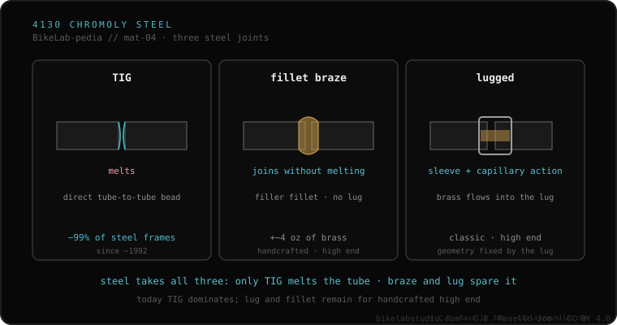

Steel is the most forgiving material to join, and there are three documented paths. TIG melts the tubes themselves to fuse them (in steel, above ~1450 °C). Fillet brazing joins them with a bronze or silver filler that melts at a lower temperature, without melting the tube. Lugged uses a sleeve (lug) at the joint, with the filler drawn in by capillary action. In practice, about 99% of steel frames built since ~1992 are TIG.
If your frame is steel, you have the most forgiving of the four materials. But "forgiving" isn't "anyone can weld it": the trick is who touches the thin wall.
TIG melts the tubes' own metal to fuse them; in steel that happens above about 1450 °C. It's fast, robust and cheap to produce, which is why it dominates modern manufacturing. Fillet brazing plays differently: it doesn't melt the tube, but joins it with a bronze or silver filler that melts at a lower temperature. It alters the tube structure less, leaves a smooth, file-able transition, but weighs a bit more and is slower and more costly.
Lugged is the third route: it uses a sleeve (lug) that wraps the joint, and the filler is drawn in by capillary action between the lug and the tube. It's the classic look of the artisan steel frame. In practice, about 99% of steel frames built since ~1992 are TIG; lugs and fillet brazing are reserved for high-end and artisan builds.

This is the gateway to the most forgiving material in the cluster. It fits directly with the difference between melting the tube or joining it without melting (TIG and brazing), with how each material does or doesn't accumulate damage in use — fatigue by material — and with the questions worth asking the welder before handing over the frame. Knowing which of the three paths your frame took is the first thing that changes the conversation.
If you're unsure about the technique, the tube or the state of a joint, send us the case. Real diagnosis, nothing to sell you. Message us on WhatsApp
Three documented paths. TIG melts the tubes themselves to fuse them (above ~1450 °C in steel). Fillet brazing joins them with a bronze or silver filler that melts at a lower temperature, without melting the tube. Lugged uses a sleeve (lug) at the joint, with the filler drawn in by capillary action.
In practice, about 99% of steel frames built since ~1992 are TIG. Lugs and fillet brazing are reserved for high-end and artisan builds: they alter the structure less, but weigh a bit more and are slower and more expensive.
Steel being the easiest to join doesn't mean any blacksmith will do. If the frame uses thin branded tubing or lugs, the excess heat from someone who welds beams burns through the thin wall or melts the adjacent bronze joint.
© 2026 BikeLab Studio. Content under CC BY 4.0: you may copy, translate and publish it, even for commercial purposes. Citation is mandatory. Without attribution, the license terminates automatically (CC BY 4.0, §6.a) and the use becomes copyright infringement: we request the removal of the content and its deindexing. · Design and ownership: Carlos Ravello Joo